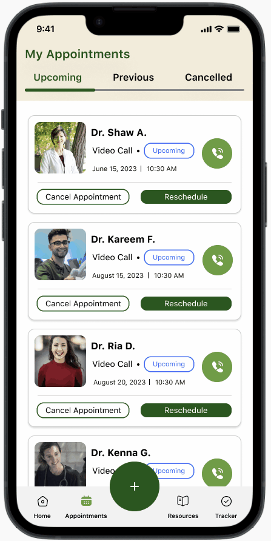
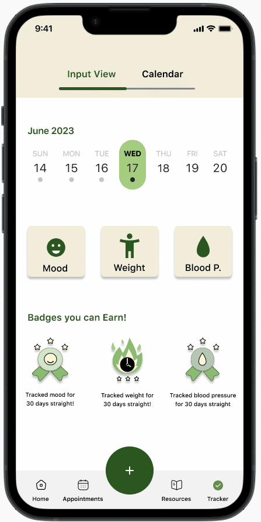

Olive
Olive
Olive is a mobile application designed to help those who want to manage their health needs online and avoid unnecessary doctor visits
Role
UX/UI Designer
Product Strategy, User Research, Interaction, Visual design, Prototyping and Testing
Case Study
June-July 2023
Summary
Olive plans to decrease traffic in doctor offices while increasing patients’ free time because many acute and chronic conditions can be managed through telehealth
In addition, we want users to stay healthy by providing valuable resources that can make them feel encouraged and empowered
Understanding the Problem
User Interviews show common pain points
- Frustrated with minimum availability and long wait times for in-person appointments
- Want to learn and keep up-to-date with relevant health information
- Lack of motivation and encouragement to succeed in living a healthy lifestyle
Problem Statement
Our users need an online platform to manage their health needs and stay motivated with healthy behaviors because they want to achieve a healthy lifestyle
We will find this to be true when we see high user retention and low churn rates
Ideation
Generated concepts from affinity mapping and insights gained from users
- Voice and Video call
- Moderated community forums and help groups
- Resources section (health blogs and articles)
- Managing prescriptions and refills
- Rewarding health tracker (mood, weight, and blood pressure)
- Paired with motivational health coaches (video, voice calls, and messaging)
Narrowing down ideas
Using quantitative data we have found 3 features most valued from our users
- Voice and Video call
- Resources section (health blogs and articles)
- Rewarding Health Tracker (mood, weight, and blood pressure)
User Flows
Using proto-personas we are able to generate task analysis’ and user flows
Clear objectives and task flows allow understanding the intricacies of how the user will interact with Olive
Site Map
Usability Testing
Multiple usability tests were done to collect data and once extrapolated it gave rise to user pain points that had to be resolved
(These tests were repeated in various stages of the design from low-fidelity to high-fidelity prototypes)
The data from the rainbow spreadsheets prioritized the main revisions needed for Olive
The main revisions included:
- Redesigning Doctor cards to allow information to be more scannable and less congested
- Redesigned layout of the resources section to allow for multiple articles to be shown at once
- Enlarging UI elements to allow for less tap errors
- Removed the booking calendar to a more visible and usable design
UI
On-boarding
These screens were designed to allow users to understand the capabilities of Olive at a glimpse
Booking a Call
The process of booking a call is easy and can be done anywhere on the app with the + icon
Resources
These screens show how Olive users can easily find and access resources for their health interests and needs
Health Tracking
This animation shows the encouraging and rewarding feeling Olive users can experience when tracking health goals
Take Aways
- Qualitative data like user interviews have so much value that it helped raise awareness to detailed user pain points, which I would never had thought of
- The design process is not linear and I enjoy that you are able to make changes anytime when supported with the correct evidence
- Hierarchy was a challenge at first but now I have a better understanding of how to use it to create clean and scannable designs.